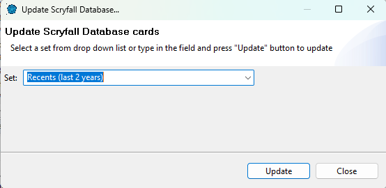

Updating Database
By default card database contains more than 100k cards. Cards which comes with default installation
is snapshot of Scryfall default list at the moment of release, so it likely does not contain latest sets.
ManaDesk software only be able to sync with Scryfall online database and if something is missing or invalid please check this
site first and send them bugs.
These are limitations on pre-loaded database
- No images - all images will be loaded on demand from internet
- Oracle text may be outdated since they keep changing oracle format
- Only english cards
- No Legality and Prices fields by default
- No latest sets
Upon first installation database is copied from software into local disk, and from then on you can only
update it using card database update commands, new software update will not update your card database.
It is actually stored in xml in very simple format, but we don't recommended modifying it manually.
Loading latest sets
If you want to load more cards,
you can run an update query which will load cards from Scryfall database.
To load missing (new) sets do "File->Check for Updates to Scryfall Card Database..." and follow instructions.
To sync in more advanced way go to "Help->Update Scryfall Card Database...".
To update from a particular set select it from the drop down list
To update for latest "released" cards select Recent
To update all cards select All (this is taking about 25 minutes)
then click "Update" button
